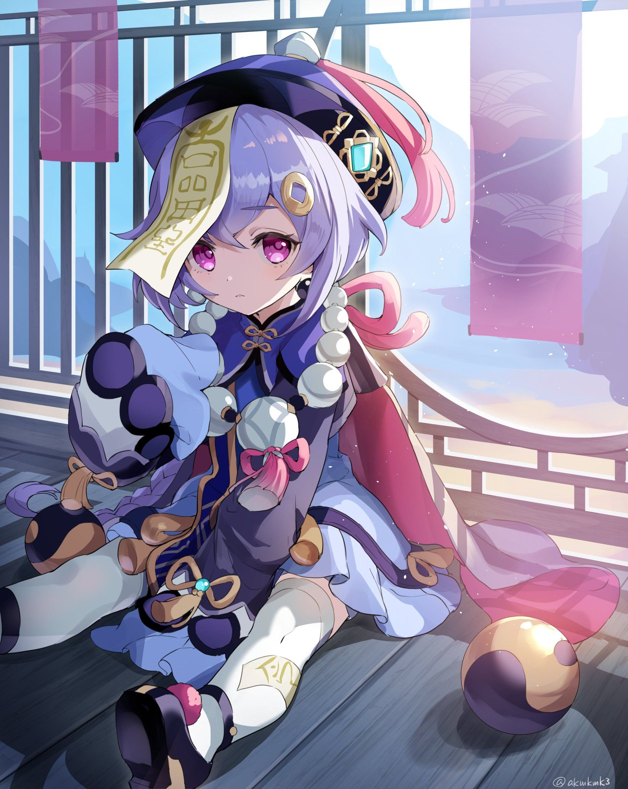

<HTML>
<HEAD>
<TITLE>Учебный файл HTML</TITLE>
</HEAD>


<html>
 <head>
 	<title>Фоновое изображение с помощью HTML</title>
 </head>
 <body bgcolor="#000" background="крио.png">
 </body>
</html>

<BODY BGCOLOR="#FFFFCC" TEXT="#330066">
<P ALIGN="CENTER">
<FONT COLOR="#008080" SIZE="7">
<SPAN STYLE="BACKGROUND-COLOR:Aqua"><B> Персонаж Ци Ци</B></FONT><BR></SPAN>
<SPAN STYLE="BACKGROUND-COLOR:lightgreen"><FONT SIZE="6"><I> Немного о персонаже </I></FONT></SPAN>
<BR><BR>




<!DOCTYPE html PUBLIC "-//W3C//DTD XHTML 1.0 Strict//EN" 
  "http://www.w3.org/TR/xhtml1/DTD/xhtml1-strict.dtd">
<html xmlns="http://www.w3.org/1999/xhtml">
 <head>
  <meta http-equiv="Content-Type" content="text/html; charset=utf-8" />
  <title>Поля</title>
  <style type="text/css">
   .space { 
    padding: 20px; /* Поля */
    background: #AFEEEE; /* Цвет фона */
    border: 2px solid #E81E25; /* Параметры рамки */
   }
  </style>
 </head>
 <body>
  <div class="space">


<div class="card">
		<h1 class="mb-3">«Я Ци Ци, я зомби... Ээ, а чего дальше говорить?»</h1>
		
<font size="4"><p>
	 Ци Ци — играбельный Крио персонаж в Genshin Impact.
</p>
<p>
         Ци Ци можно простить вечное отсутствие эмоций на лице, ведь она - зомби.
</p>
<p>
	 Ци Ци каждый день занимается гимнастикой, поэтому не подумайте, что она неповоротливый зомби. У Ци Ци очень плохая память, из-за этого людям она кажется ещё более холодной.
</p>
<p>
	 Не стоит судить о возрасте Ци Ци по её внешности, ведь её внешний облик сохранился с момента её смерти.
</p>
<p>
	 Все зомби подчиняются приказам, но по некоторым причинам Ци Ци сама себе отдаёт приказы, и сама же им подчиняется.
</p>	</div>
  </div>
 </body>
</html>

<BR><BR>

<SPAN STYLE="BACKGROUND-COLOR:lightgreen"><B> Ссылки:<B><BR></SPAN>
</P>
<TABLE WIDTH=60%>
<TR><TD><A HREF="020.HTML"><SPAN STYLE="BACKGROUND-COLOR:Aqua">Сильные и слабые стороны персонажа Ци Ци</A></TD>
<TR><TD><A HREF="0020.HTML"><SPAN STYLE="BACKGROUND-COLOR:Aqua">Таланты и навыки персонажа Ци Ци</TD>
<TR><TD><A HREF="00020.HTML"><SPAN STYLE="BACKGROUND-COLOR:Aqua">Созвездия персонажа Ци Ци</TD>
<TABLE>
</BODY>
</HTML>
<BR><BR>


<input type="button" onclick="history.back();" value="Назад"/>